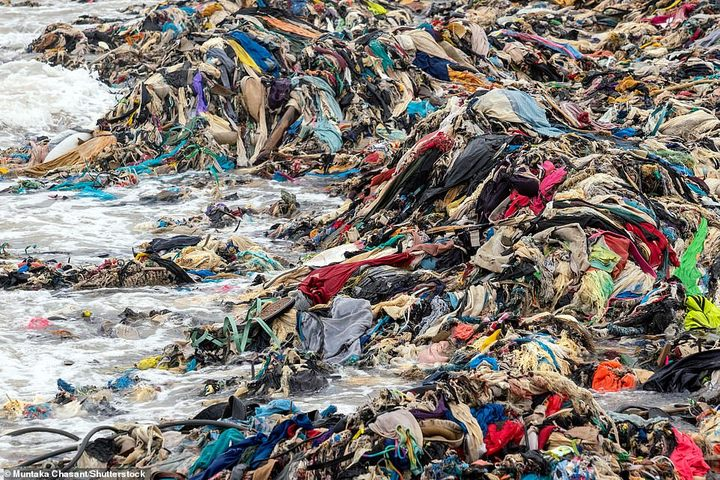

"지속가능한 패션(Sustainable Fashion)"은
환경적, 사회적, 윤리적 영향을 고려하여
옷을 디자인, 생산, 유통, 소비, 폐기하는
패션 산업의 접근 방식을 말합니다.
단순히 '친환경 옷'에 그치지 않고, 패션 산업 전반의 시스템을
지속 가능한 방식으로 전환하는 것을 목표로 합니다.
섬유업계가 배출하고 있는 온실가스 배출량은
EU 전체의 20%가량을 차지한다.
매년 600만톤의 의류폐기물이 발생하고 있고,
이 가운데 재활용 되는 비중은 4분의 1에 불과하다.

“우리가 오늘 입는 옷은 단순한 선택이 아닙니다.
그것은 환경을 보호하고, 사람을 존중하며, 미래를 지키는 약속입니다.
지속 가능한 패션은 더 적게 만들고, 더 오래 입으며,
더 나은 세상을 향해 가는 가장 아름다운 소비입니다.
작은 변화가 큰 내일을 만듭니다.
우리는 옷으로 세상을 바꿀 수 있습니다.”